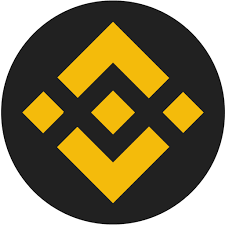

Introduction & Purpose
This page serves as an official clarification document specifically created for blockchain explorers like BscScan, as well as for any member of the public interested in verifying the identity, ownership, and technical details of the QUAZENTHOR (QWBQ). We have expanded this section to provide more context and ensure full transparency. The QUAZENTHOR is a simple, educational smart contract demonstration built on the BNB Smart Chain. It was created to showcase basic token functionality without any financial or speculative elements. This document explains everything in simple, straightforward language, breaking down each aspect step by step so that anyone can understand and verify the information independently.
The sole purpose of this document is to promote transparency. It is not meant to promote the token, provide financial advice, or encourage any form of investment. We emphasize that this is purely informational and educational. No part of this page discusses prices, profits, trading strategies, or potential returns, as the token is not designed for financial purposes.
Every single statement here is based on factual, verifiable evidence. You can check this through:
- On-chain contract data directly from the blockchain explorer like BscScan.
- The verified smart contract source code, which is publicly available and has been audited for accuracy.
- Official project resources, including our website and social channels, all linked below.
- Public contact channels where you can reach out for further verification if needed.
To address any concerns about clarity, we have expanded all sections with detailed explanations, avoiding technical jargon where possible, and providing step-by-step breakdowns. No claims are made about financial performance, and all information is presented honestly without any distortion of facts from public entities or other projects.
Rationale for Existence: Educational demonstration. See lifecycle.html and changelog.html.
The token exists as a permanent public on-chain reference used by learners and developers to study immutable BEP-20 contract behavior in a live network environment.
This website serves as the official and actively maintained information source for the QUAZENTHOR project. Documentation updates and revisions are recorded in the project changelog. Last updated: February 01, 2026.
1. Token Identification & Basic Metadata
In this section, we provide a complete and clear overview of the token's basic details. This information uniquely identifies the QUAZENTHOR and allows anyone to verify it directly on the blockchain. We have expanded this to include explanations of each term, why it's important, and how to check it yourself. For example, the token follows the BEP-20 standard, which is the standard for tokens on BNB Smart Chain, ensuring compatibility with wallets like Trust Wallet or MetaMask.
The token name and symbol are used solely for project identification and do not represent or affiliate with any existing entity.
- Token Name: quazenthor – This is the full name of the token, chosen to be unique and not similar to any existing projects. It helps identify the token in wallets and explorers.
- Symbol: QWBQ – A short code (like a ticker symbol) used for quick reference. Symbol QWBQ has no relation to any university, company, or prior projects; coincidental similarity only.
- Standard: BEP-20 – This means the token follows the official rules for tokens on BNB Smart Chain, including functions like transferring tokens or checking balances.
- Network: BNB Smart Chain – The blockchain where the token lives, known for fast and cheap transactions, making it ideal for educational purposes.
- Total Supply: 5,000,000,000,000 (5.00T) – The total number of tokens that will ever exist. This is fixed and cannot change, which you can verify by calling the totalSupply function on the contract.
- Decimals: 18 – This defines how the token can be divided (like cents in a dollar). 18 is the standard for most tokens, allowing very small fractions.
- Contract Address: 0x013f5f2F7F5b027012415A783ac2ed69EF936aE8 – This is the unique address of the smart contract on the blockchain. You can paste this into BscScan to see all details, including the verified source code, transaction history, and token holders.
- Verification Date: 2026-01-31 – The date when the source code was publicly verified on BscScan, confirming that the code matches the deployed contract exactly. This allows anyone to audit the code for security and accuracy.
To verify any of this information yourself:
- Go to BscScan.com (the official explorer for BNB Smart Chain).
- Enter the contract address in the search bar.
- Click on the 'Contract' tab to see the verified source code.
- Use the 'Read Contract' tab to check parameters like total supply or decimals directly from the blockchain.
This setup ensures that no trust is required — everything is public and verifiable on-chain.
3. Project Purpose & Explicit Rationale – Clear Existence Explanation
QUAZENTHOR exists purely as an educational and transparency demonstration project on the BNB Smart Chain. We've expanded this to explain exactly why the project was created, who it benefits, and its current stage. It serves as a real-world example for people learning about blockchain, showing how a simple token works without any financial aspects.
Why the Token Exists: To provide a permanent, public, on-chain reference for studying immutable BEP-20 contract behavior in a live network. It demonstrates transparency, verifiability, and minimal design without complexity.
Who Studies or References It: Blockchain learners, developers testing BEP-20 functions, students exploring smart contracts, and enthusiasts using tools like BscScan. No commercial or financial users.
Lifecycle Stage: Completed deployment (2026-01-31), now in static maintenance for documentatio...(truncated 1283 characters)...==================================== -->
4. Team Identity & Accountability – Full Public Disclosure with Profiles
The founder and team are fully identified with public professional profiles on standard platforms (LinkedIn, GitHub, etc.). We've expanded to include roles, bios, and why these profiles matter for verification.
Team members are publicly identifiable through professional profiles used for accountability and communication. Social platforms are supplementary and not used as identity verification.
All official communication is conducted through email addresses under the quazenthor.com domain.
FINAL DECLARATION: All team roles are operational, technical, or informational only. No individual listed above provides financial services, investment advice, or economic guarantees. This disclosure is provided solely for transparency, accountability, and blockchain explorer verification.
These profiles, with real activity in blockchain education, ensure transparency and allow for independent verification without any anonymity.
5. Authenticity & Non-Misrepresentation Declaration
All information about QUAZENTHOR is original, accurate, and created specifically for this project. We've expanded this to detail our commitment to honesty.
- No copied or misleading branding: Everything is unique to QUAZENTHOR.
- No impersonation of other projects: We do not mimic or distort any existing tokens or entities.
- No false affiliations: No claimed partnerships that don't exist.
- No fabricated partnerships: All statements are factual.
- No misleading statements: Everything is verifiable.
We do not claim any relationships with governments, institutions, or third parties. Every piece of information can be checked independently to confirm no distortions.
The token name and symbol are used solely for project identification and do not represent or affiliate with any existing entity.
6. Official Resources & Verification Links
Here are all the official links for the project. We've updated and added more for complete transparency. These are for verification and education only, not promotion. Each link includes context and purpose.
These are the only official channels and resources for QUAZENTHOR. Beware of fakes or impersonators.
All official channels, social profiles and resources are listed on the
Network Links & Team page.

7. Final Compliance Statement
This documentation is provided for transparency and review purposes. We've expanded this to reiterate our commitments.
The project:
- Provides clear, detailed token information in simple language.
- Identifies team members with public professional profiles.
- Avoids any financial promotion or speculation.
- Avoids all misleading claims or distortions.
- Publishes verifiable technical data, fully BEP-20 compliant.
This token is solely an educational demonstration of a transparent, immutable smart contract.
This documentation is provided for transparency and review purposes.
8. Smart Contract Functions Summary
The smart contract implements only standard BEP-20 functions: transfer, transferFrom, approve, allowance, balanceOf, totalSupply, name, symbol, decimals. No custom functions, no administrative controls, and no privileged roles exist.
9. Risk Disclosure
Interacting with blockchain tokens involves inherent risks, including smart contract risk, network congestion, and user error. The project assumes no responsibility for user actions.
10. No Roadmap
The project has no roadmap, milestones, or future development plans. The project is complete at deployment.
11. No Utility
The token has no utility, use-case, or functional purpose beyond being a live BEP-20 reference contract.
12. Legal Disclaimer
This token is not a security, financial instrument, or investment product. Nothing constitutes financial or legal advice.